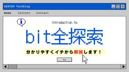

KENTEM TechBlog
https://tech.kentem.jp/
建設業のDXを実現するKENTEMの技術ブログです。
フィード

「bit全探索」とは？分かりやすくイチから解説します！
KENTEM TechBlog
こんにちは。KENTEMに入社して3ヶ月目の新卒エンジニアS・Kです。 私は学生時代、アルゴリズムが大好きでよく勉強していました。その中でも面白いなと感じたbit全探索というアルゴリズムを紹介していきたいと思います。 はじめに 簡単な問題とプログラミングでの解法 bit全探索とは？ 組み合わせを「数値」で表現する 実装 bit全探索の実装 右シフト演算子 (>>) AND演算(&) 右シフト演算子とAND演算をコードに組み込む bit全探索で問題を解いてみる まとめ 計算量についての補足（競技プログラミング） おわりに はじめに 簡単な問題とプログラミングでの解法 突然ですが皆さんに問題です。…
4日前

KENTEM TECH CONF 2025 Summer を開催しました！
KENTEM TechBlog
こんにちは！KENTEM開発エンジニアのK.I.です。 6/24・6/25の二日間で、KENTEM TECH CONF 2025 Summerを開催しました。 KENTEM TECH CONFとは？ 今回の注目ポイント LT枠の導入 若手賞の導入 ビッグタイトル賞の導入 発表内容の紹介 Iさん（5年目） Oさん（2年目） Kさん（1年目） おわりに KENTEM TECH CONFとは？ 「KENTEM TECH CONF」は、年2回開催される社内のオンライン技術発表会です。 目的や背景などの詳細は、以下の記事をご覧ください。 tech.kentem.jp 今回の注目ポイント LT枠の導入 前…
9日前
「パスワードレス認証」とそのトレンドについてまとめてみる
KENTEM TechBlog
こんにちは。KentemのR.I.です。 年々セキュリティに関する世間の興味も高まり、技術も進展しています。 この記事では、昨今注目され始めた「パスワードレス認証」について私自身も気になったので掘り下げてみます！ ※2025年6月時点の状況を様々な資料から集約・整理してみました。 はじめに： パスワードレス認証 とは？ 実際どうなの？： パスワードレス認証 の実情 パスワードレス認証 のトレンド「パスキー」 パスキー（Passkeys） どんな技術？ どんな手段、サービスがある？ 少し気になる「Windows Hello」 トレンド技術に対して感じたこと まとめ おわりに はじめに： パスワー…
11日前
【C#】Authorize 属性ってなに？Cookie 認証をベースに ASP.NET Core の認証・認可を理解しよう！
KENTEM TechBlog
KENTEM でバックエンドを担当している N.Y です。 よく C# で書いた API Controller のメソッドに、 [Authorize] という属性（アトリビュートとも言う）が付いているのを見たことはありませんか？？ [Authorize] // ←これ public IActionResult Dashboard() { // なにかしらの処理 return View(); } ASP.NET Core 側で用意されている属性で、認証・認可で使用されているっぽいな～ということしか知りませんでしたが C# エンジニアになるには理解は必須だと思い、今回調べてみました。 認証・認可に…
13日前
パフォーマンス検証：バイナリファイル vs テキストファイルの速度比較
KENTEM TechBlog
はじめに なぜテキストファイル読み込みは遅い？ 検証 環境 準備 読み込み処理 計測 結果 まとめ 補足として おわりに はじめに こんにちは。 快測Scanという製品の開発に携わってるプログラマです。 快測Scanは、手軽に点群データを取得、確認ができるモバイルアプリです。 点群をUnityEditor上で表示しようとすると実機に比べて処理が非常に遅く、ストレスに感じる場面がありました。 原因の一つとして、データをテキストファイルから読み込んでいることが挙げられます。 そこで、テキストファイルとバイナリファイルからの読み込みで、どれほどの差がでるのか検証してみることにしました。 本記事では以…
16日前
RDBによるJSONデータ戦略
KENTEM TechBlog
NoSQLデータベースの台頭によりデータをJSONで保持し、それなりに検索性能も担保することが可能になってきた昨今ではありますが、ACID特性やデータの処理コスト、SQLという洗練されたデータ操作インターフェイスの存在で、まだまだRDBはあらゆるシステムで採用されているDBMSであると感じます。とは言え、 データをJSONで保持したい JSON内の１属性に指定の値を持つレコードを検索したい 性能は犠牲にしたくない ACID特性も犠牲にしないでね・・・ という要求はたしかに実在します。 最近のバージョンのMySQLやPostgreSQLはJSON型をサポートしており、特にPostgreSQLはJ…
18日前
社内コード、どう共有する？4つの方法をゆるっと比較してみた
KENTEM TechBlog
こんにちは！ 開発をしていると、「あれ、この機能、前にも別のプロジェクトで使ったな…」って思うこと、ありませんか？ログ出力とか、APIの呼び出し方とか、認証処理とか。 毎回ゼロから書くのは面倒だし、できれば使い回したいですよね。 そんなときに便利なのが「共通機能の共有」。でも、いざ共有しようとすると、「どうやって？」ってなるんです。コピーして貼るだけじゃ後で地獄を見るし、かといって複雑な仕組みを入れると運用が大変…。 この記事では、社内で共通機能を共有する方法として、よく使われる4つのパターンを紹介します。それぞれのメリット・デメリットを、実際に使ってみた感想も交えながら、ゆるっと解説していき…
20日前
TypeScriptでZustandを使う方法と注意点
KENTEM TechBlog
こんにちは。フロントエンドエンジニアのM・Sです。 皆さんは状態管理ライブラリは何を使っていますか？ 私のプロジェクトではZustandを採用しています。 Zustandはシンプルで柔軟な状態管理ライブラリです。 Reactにおけるグローバルな状態の管理に適しており、Reduxのような冗長さを避けつつ、必要な機能を抑えています。 この記事では、TypeScriptでZustandを使う際に最低限知っておくべきことと注意点を紹介します。 基本的な使い方 TypeScriptでの使い方 カリー化について なぜカリー化をする必要がある？ 値を永続化して保持する まとめ おわりに 基本的な使い方 基本…
23日前
Vite × React × TypeScript 開発環境構築ガイド
KENTEM TechBlog
こんにちは！ 2年目、フロントエンジニアのH.Rです。 今回は、Vite × React × TypeScriptの開発環境構築ガイドを解説していきたいと思います！！ 前提条件 環境 インストール Node.jsのインストール確認 プロジェクトの作成 プロジェクトの作成 TypeScript と TypeScript + SWC の違い プロジェクトの起動 依存パッケージをインストール 開発サーバーを起動 サーバーの停止方法 あとがき 前提条件 Node.jsがインストールされていることを確認してください。 ターミナルで以下のコマンドを実行し、バージョンが表示されなければ公式サイトからインスト…
25日前
KotlinでGoogle Motion Photo撮影アプリを自作
KENTEM TechBlog
Canvaの capturenowが提供する素材 こんにちは、まつです。 最近スマホを別のメーカーに変えましたのですが、Google Motion Photo形式で写真撮影できないことに気付きました。 Google Motion Photo形式で撮影できるアプリが無いか調べたところ、スマホを変えた時点（2025年3月）ではそのようなアプリが見付かりませんでした。 ということで、無いならば作ればいいの精神で、Google Motion Photo形式で撮影できるアプリを自作しました。 今回は、AndroidのKotlin環境で「Google Motion Photo」を自作する方法をご紹介します…
1ヶ月前
AzureでOCR、どのサービスを使う？
KENTEM TechBlog
開発部のM.Tです。 Azureを使ってOCRするとなると、Document Intelligence (旧Form Recognizer) か、Computer Vision を使うことになると思います。 この２つのサービスの違いをよく知らなかったので、機能とコスト面を簡単に比較してみました。 Document Intelligence 得意分野 使い方 コスト Computer Vision 得意分野 使い方 コスト どっちを使う？ OCR まとめ おわりに Document Intelligence Azure AI サービスのひとつで、ドキュメント処理を得意とします。 learn.mi…
1ヶ月前
Jotaiの採用で可読性と保守性向上！：React.ContextからJotaiへの移行
KENTEM TechBlog
こんにちは！KENTEMでフロントエンドエンジニアをしているS.W.です。 私が担当しているプロダクトでは、React Contextを用いた状態管理において、ひとつのContextに複数の状態変数が密集している状態でした。 その結果、 可読性の低下 保守性の悪化 パフォーマンスへの影響 といった課題が顕在化していました。 こうした問題を解決するために、まずは状態管理のアプローチを見直す必要があると考え、第一歩として状態管理ライブラリの導入を検討しました。 その結果、Jotaiを採用する決断をしました。 この記事では、Jotaiへの移行ポイントや実際の移行手順を、具体的なコード例を交えながら詳…
1ヶ月前
来期のチームビジョンについて
KENTEM TechBlog
こんにちは。KENTEM第１開発部のM.Oです。 弊社は6月決算となっており、7月から新しい期に変わります。 私は現在、いくつかのプロジェクトに参加しながら部門のチームリーダーという立場で仕事を行っておりますが、来期より複数のプロダクトを受け持つエンジニアリングマネージャーを担うことになりました。 今までより、部門管理系のマネジメント業務が多くなってくると認識しています。 そこで、私の目指すチームの姿として以下の3つを定義しました。 チームビジョン 1. 自己組織型チームの確立 メンバーが自律的に行動し、目標達成に向けてチームとして意思決定するチームを構築する オープンでフラットなコミュニケー…
1ヶ月前
バージョン管理を半自動化した話～DependaBot × GitHub Actions～
KENTEM TechBlog
はじめに こんにちは！新卒2年目でAIエンジニア（？）になりましたK・Mです。さて、ソフトウェア開発において切り離せないのが外部パッケージです。そんな外部パッケージ、インストールした段階では最新のものを使っていても、少し時がたてば古いバージョンとなってしまい、気づけばEOL間近であわてて大改修。なんて話をちらほら耳にします。（幸いにも自分は経験したことないですが笑） このような事態を防ぐために、GitHubはDependaBotというツールを用意してくれてます。今回は個人開発でこちらを使ってみたのでご紹介します。また、途中から PRがうっとおしい 確認が大変になってきたので、自動マージも導入し…
1ヶ月前
IT未経験から3年間React開発を行った振り返り
KENTEM TechBlog
UnsplashのYannik Zimmermannが撮影した写真 こんにちは。フロントエンドエンジニアのT.C.です。私はITエンジニア未経験でKENTEMにキャリア入社し、React歴も4年目になりました。 どのくらいのスキル感で入社して、各年次ごとにざっくりどの程度のスキルを持つようになったのかを共有します。 スキルの成長は具体的な数値で測りにくい部分もありますが、当時の感覚や経験したことを中心にお伝えできればと思います。 また、後半ではアトミックデザインやフロントエンドテストを導入した際に学んだことも書かせていただきます。 主観の多い記事にはなりますが、Reactエンジニアを目指してい…
1ヶ月前
【C#】C#14にて待望の拡張メンバーが登場！
KENTEM TechBlog
こんにちは！C#愛好家です。 執筆中の2025年6月時点での最新の正式リリースバージョンはC#13ですが、今冬に.NET10と共にリリースされる予定の「C#14」についてご存じでしょうか？ C#14では な、な、ナ、ナント、 拡張メンバー（拡張プロパティ） が実装されます！（ﾊﾟﾁﾊﾟﾁﾊﾟﾁ） C#erの皆さんなら誰しも待ち望んでいた機能が簡単に実装できます！ 今回はその概要をお伝えします！ 事前準備 .NET10 SDK 開発環境 プロジェクト作成 実装方法 以前までの実装 C#14での実装 まとめ おわりに 事前準備 C#14は2025年6月時点ではまだプレビュー段階です。 プレビュー機…
1ヶ月前
型でもテンプレートリテラル？type Y = `${X}`という書き方
KENTEM TechBlog
UnsplashのJoanna Kosinskaが撮影した写真 こんにちは。ReactエンジニアのT.C.です。 TypeScriptの型を知らなくても動作やパフォーマンスには直接影響しないので、AIなどが便利に活用できるようになった現在でも意識して学ばないと触れる機会が少ないと思います。 Mapped TypesやIndexed Access TypesなどTypeScriptにはやや高度な型定義の方法がありますが、Template Literal Typesという書き方に最近気づいたので、ご紹介します。 詳しいことや具体的な実装は公式ページやAIにお任せしますので、本記事では「こんなことも…
1ヶ月前
次世代フォーマッターBiome、実務で半年使ったリアルな感想とその魅力とは？
KENTEM TechBlog
こんにちは。KENTEM第二開発部でフロントエンドを担当しているM・Sです。 普段の開発において、フォーマッターとリンターは開発者の強い味方ですよね。 従来のWeb開発においてはPrettierとESLintを組み合わせるのが主流でしたが、最近はBiomeというツールが登場しています。 今回はBiomeの特徴や、実際の製品開発プロジェクトで半年使ってみてわかったことをご紹介いたします！ ちなみにフォーマットとリントの定義はこちら↓ フォーマット: コードの見た目を統一・整形する リント: コードの問題点や規約違反を検出する 特徴 フォーマットもリントもこれ１つで 高速 フォーマッティング性能 …
1ヶ月前
【GitHub Actions】何がややこしいのか少し考えてみた【よくわからん】
KENTEM TechBlog
突然ですが皆さんGitHub Actions使ってますか？ 単純なビルド＆デプロイから、テストコードの実行などなど色々できて便利ですよね。 どこかのチームが便利なワークフローを作ってくれたので、 「あれ参考にしてうちのプロジェクトにも入れて！」という話はよくあるのではないでしょうか。 「意味は分からんけど、丸ごとコピーして動いたからヨシ！」というのはまだ可愛いもので、 「動かしてみたらエラーまみれで、何処を直せばいいのかさっぱりわからん・・・」となることもあるかと思います。 そこで今回は他人の作ったワークフローを読み解くにあたって、 何がややこしくなっている原因なのかを少し考えてみることにしま…
1ヶ月前
第３オフィス拡張しました編
KENTEM TechBlog
こんにちは！KENTEMでフロントエンドを担当しているH・Rです。 今回は、最近新たに増設された静岡第3オフィスについてご紹介します！ 既存フロアの隣に、新しいフロアがオープンしました。 既存フロアの紹介はこちらに掲載しています👇 tech.kentem.jp 静岡の中心地でアクセス良好！ 各エリアのご紹介 まとめ おわりに 静岡の中心地でアクセス良好！ 静岡第3オフィスは、JR静岡駅から徒歩約8分、静岡鉄道の新静岡駅からは1分と、アクセスが良い好立地にあります。 https://maps.app.goo.gl/n35Qrz8SxhZDUXyY7 各エリアのご紹介 まずは、執務スペースです。 …
2ヶ月前
【React】モードを切り替えてもフォーカスを保持したい
KENTEM TechBlog
UnsplashのPaul Skorupskasが撮影した写真 こんにちは。ReactエンジニアのT.C.です。 モードを切り替えてもフォーカスを保持し続ける入力欄を持つコンポーネントを開発していて、挙動を調査したため共有します。 フォーカスが消えるのか消えないのか 問題のコード 追加の調査 結論 まとめ おわりに フォーカスが消えるのか消えないのか 問題のコード 以下のAppをレンダリングしたとき、入力欄をダブルクリックしたらフォーカスはどうなるでしょうか？ import { useState } from "react"; type InputProps = { onDoubleClick…
2ヶ月前
ソフトウェア開発の迷いと進む道：判断プロセスと情報共有のバランスを考える
KENTEM TechBlog
UnsplashのPatrick Robert Doyleが撮影した写真 フロントエンド開発を担当し、最近はマネジメント業務についても学んでいるT.C.です。 ソフトウェア開発では、日々様々な課題に直面し、その解決のために小さな意思決定を積み重ねていくことになります。 本記事では、私が3年ほどのソフトウェア開発経験を通じて感じた、この「選択」の難しさと面白さ、そしてその「共有」のあり方について、私なりの考えを共有させていただきたいと思います。 業務で開発を始めたばかりの頃のイメージと実際の乖離 絶対的な正解はない じゃあどうするか 選択までの大切なプロセス 情報共有のバランス感 理由の共有が大…
2ヶ月前
KENTEMの本棚紹介：2024年6月～2025年5月
KENTEM TechBlog
KENTEMでは技術書の購入補助制度があります。 tech.kentem.jp 学びにどん欲なエンジニアは、この制度をフル活用しています。 今回は1年間で、この制度を利用して購入した技術書をご紹介いたします。 購入した書籍 プログラミング 設計 Azure AI Git 組織 Agile おわりに 購入した書籍 プログラミング www.oreilly.co.jp gihyo.jp gihyo.jp www.oreilly.co.jp www.oreilly.co.jp www.shoeisha.co.jp 設計 bookplus.nikkei.com www.oreilly.co.jp www…
2ヶ月前
おーい、Devin君。新人さんのトレーニング用にToDoアプリのサンプル作っておいてー。
KENTEM TechBlog
どうも、こんにちは。KENTEMで iOS/Windows のアプリ開発を担当しているエンジニアの T.K です。 この度、いつでも、どこでも、どんなタスクもこなしてくれる頼れるエンジニア、Devin君を私の開発パートナーに迎えました！ 率直に言って、雇って大正解 です。 AIが目覚ましい進化を遂げるなか、パラダイムシフトが次々と起こり、その価値がバーゲンセールのように錯覚してしまうほどの時代になりました。そんな状況において、Devin は全 ITエンジニア必見の存在 だと言っても過言ではありません。 少し主観も交えるかもしれませんが、私なりの視点でこの画期的なAIエージェントをご紹介していき…
2ヶ月前
ざっくり把握する暗号技術の仕組み~ハイブリット暗号方式使ってなくね？編~
KENTEM TechBlog
気が付けば5月(執筆中)。前回の記事を投稿してからひと月が経過していました。 気が付けば新人が入ってきて、気が付けば梅雨が始まろうかと言わんばかりの季節に。 私が気が付かないのか、世界が気づかせてくれないのか。どうもエンジニアTです。 戯言もほどほどに。 前回は「ざっくりと従来の暗号技術を把握」したので、その続きとして「最近、(TLSで)ハイブリット暗号方式が使われないらしい」ことについてざっくり紹介したいと思います。 ↓↓↓前回記事↓↓↓ tech.kentem.jp 注意点: 本稿の正しい読み方 本稿は新卒2年目エンジニアが作成した大変引用に向かない記事です。 曖昧な表現や本質的ではない部…
2ヶ月前
【VSCode】Reactコーディングが捗る！意外と知らない便利ショートカット3選
KENTEM TechBlog
UnsplashのEmile Perronが撮影した写真 こんにちは。ReactエンジニアのT.C.です。 VSCodeにはいくつもショートカットがありますが、今回はその中でも特に便利でありながら、意外と活用されていないと感じたショートカットを3つ厳選してご紹介します。(普段Windowsで開発しているので、Windowsのキーで表現します。) コーディングの際にもコードレビューの際にも便利な機能をピックアップしましたので、知らなかったものがあればぜひ使ってみてください。 Ctrl + D（同じ単語を連続選択） Shift + Alt + → / ←（選択範囲のスマートな拡大・縮小） F12（…
2ヶ月前
Architectへの第一歩：社内研修(設計)の紹介
KENTEM TechBlog
u{ text-decoration: none; background: linear-gradient(transparent 50%, yellow 50%) !important;} こんにちは、KENTEM第1開発部のD.Sです。 以前 『C++』研修を紹介させて頂きましたが、この度『設計』研修を作成しましたのでご紹介いたします。 未経験でも大丈夫！KENTEM社内研修(C++)の紹介 - KENTEM TechBlog カリキュラム 1セッションの構成 おわりに カリキュラム 設計研修は以下の11セッションで構成されています。 単一責任の原則 オープン・クローズドの原則 リスコフの…
2ヶ月前
CosmosDBのRU消費量についてまとめてみる
KENTEM TechBlog
ここ一年程、新規製品の開発でAzure CosmosDBに触れることができました。 CosmosDBはMicrosoft Azureで手軽に使用できるNoSQLサービスですが、 いざリリースしてみると消費RUが想定以上となり金額面で苦労するケースがありそうです。 今回はCosmosDBの各処理毎のRU消費についてまとめてみようと思います。 前提 ReadItemAsync()で取得した場合 ReadManyItemAsync()で取得した場合 GetItemLinqQueryable()で取得した場合 GetItemLinqQueryable()でデータの一部を取得した場合 CreateIte…
2ヶ月前
ASP.NET Core の依存関係の挿入を使おう
KENTEM TechBlog
ASP.NET Core の依存関係の挿入って知っていますか？依存関係の挿入を使う事で効率的なリソース管理を行ったり、テストコードが書きやすかったりします。今回は ASP.NET Core を使ったクラス管理について MVC パターンでまとめたいと思います。 シンプルに登録して使う サービスの有効期間を使い分ける 登録メソッド AddSingleton AddScoped AddTransient インターフェイスを使ってダミーに差し替える 運用コードの変更 テストコードの実装 まとめ おわりに シンプルに登録して使う クラスを依存関係に登録します。この記事では登録するクラスの事をサービスクラ…
2ヶ月前
.NET MAUI でアプリを作ろう（基礎編）
KENTEM TechBlog
こんにちは！KENTEM第2開発部のK.H.です。 1年半ほど前にMAUIでアプリ開発を行う機会があり、その流れでMAUIの記事を書かせていただきました。 その際は苦しかった思い出が強く、MAUIに対する恨みから、ちょっと否定的に書いてしまいました。 ただ、そこから時を経て、恨みの記憶が薄まり、MAUI自体も.NET7⇒.NET8⇒.NET9という進化の中で一番の問題であった不安定さやパフォーマンスが改善されてきたことで、MAUIと仲直りしました。 ということで、MAUI開発者が増えることを祈って、MAUIで実際にアプリを作成する記事を書きたいと思います。 ※VisualStudio2022を…
2ヶ月前